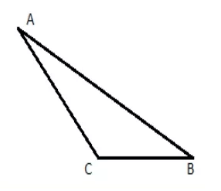

Треугольник, у которого все три угла острые, называется остроугольным.
Треугольник, имеющий тупой угол называется тупоугольным. ∠C - тупой угол.

Треугольник, имеющий прямой угол называется прямоугольным. Сторона, лежащая против прямого угла, называется гипотенузой, а стороны образующие прямой угол - катетами. AC и AB - катеты, ВC - гипотенуза. ∠A=90° (прямой угол).